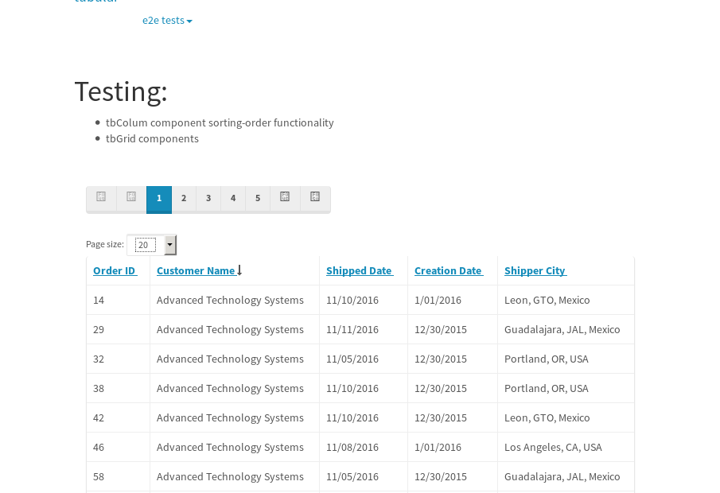

tbColumn.Grid Sorting - 175.897sTests: 5Skipped: 0Failures: 3 should sort data in ascending order then on descending order when sorting by Order Id column - 44.003sExpected '1' to be '500'.✗Expected '20' to be '481'.✗Tests passed: 50.00%should order data in ascending order when click-sorting an unsorted text column - 22.998sTests passed: 100.00%should order data in descending order when click-sorting an ascending-sorted text column - 42.948sExpected 'Advanced Technology Systems' to be 'Vesta'.✗Tests passed: 0.00%should order data in ascending order when click-sorting an unsorted date column - 22.996sTests passed: 100.00%should order data in descending order when click-sorting twice an unsorted date column - 42.944sExpected '12/30/2015' to match /1\/01\/2016/.✗Tests passed: 0.00%
tbEmptyForm - 3.258sTests: 3Skipped: 0Failures: 0 should have an empty required field - 1.648sTests passed: 100.00%should not be able to click on save - 0.025sTests passed: 100.00%should load default value for numeric field - 0.03sTests passed: 100.00%
Tubular Filters.tbColumnFilter - 92.964sTests: 12Skipped: 0Failures: 0 should cancel filtering when clicking outside filter-popover - 7.822sTests passed: 100.00%should disable Value text-input for "None" filter - 5.802sTests passed: 100.00%should disable apply button for "None" filter - 5.642sTests passed: 100.00%should decorate popover button when showing data is being filtered for its column - 10.772sTests passed: 100.00%should correctly filter data for the "Equals" filtering option - 6.861sTests passed: 100.00%should correctly filter data for the "Not Equals" filtering option - 6.876sTests passed: 100.00%should correctly filter data for the "Contains" filtering option - 6.991sTests passed: 100.00%should correctly filter data for the "Not Contains" filtering option - 6.978sTests passed: 100.00%should correctly filter data for the "Starts With" filtering option - 5.7sTests passed: 100.00%should correctly filter data for the "Not Starts With" filtering option - 5.963sTests passed: 100.00%should correctly filter data for the "Ends With" filtering option - 5.999sTests passed: 100.00%should correctly filter data for the "Not Ends With" filtering option - 6.233sTests passed: 100.00%
Tubular Filters.tbColumnDateTimeFilter - 122.449sTests: 12Skipped: 0Failures: 0 should cancel filtering when clicking outside filter-popover - 6.134sTests passed: 100.00%should disable Value text-input for "None" filter - 5.42sTests passed: 100.00%should disable apply button for "None" filter - 5.717sTests passed: 100.00%should clear filtering when clicking on Clean button - 16.229sTests passed: 100.00%should decorate popover button when showing data is being filtered for its column - 10.783sTests passed: 100.00%should correctly filter data for the "Equals" filtering option - 6.349sTests passed: 100.00%should correctly filter data for the "Not Equals" filtering option - 6.321sTests passed: 100.00%should correctly filter data for the "Between" filtering option - 11.061sTests passed: 100.00%should correctly filter data for the "Greater-or-equal" filtering option - 10.917sTests passed: 100.00%should correctly filter data for the "Greater" filtering option - 10.827sTests passed: 100.00%should correctly filter data for the "Less-or-equal" filtering option - 10.74sTests passed: 100.00%should correctly filter data for the "Less" filtering option - 10.712sTests passed: 100.00%
Tubular Filters.tbColumnOptionsFilter - 76.532sTests: 3Skipped: 0Failures: 0 should cancel filtering when clicking outside filter-popover - 7.142sTests passed: 100.00%should decorate popover button when showing data is being filtered for its column - 10.537sTests passed: 100.00%should filter column-elements in accordance to the selected filter when selecting a single option - 47.517sTests passed: 100.00%
Tubular Filters.tbTextSearch - 43.663sTests: 5Skipped: 0Failures: 0 min-chars is not set - 0.08sTests passed: 100.00%should filter data in searchable-column customer name to matching inputted text, starting from 3 characters - 5.876sTests passed: 100.00%should filter data in searchable-column shipper city to matching inputted text, starting from 3 characters - 10.992sTests passed: 100.00%should show clear button when there is inputted text only - 5.599sTests passed: 100.00%should clear filtering when clicking clear button - 15.411sTests passed: 100.00%
tbForm related components.tbCheckboxField - 4.474sTests: 2Skipped: 0Failures: 0 should save changes on "SAVE" - 1.621sTests passed: 100.00%should discard changes on "CANCEL" - 1.603sTests passed: 100.00%
tbForm related components.tbDropDownEditor - 6.246sTests: 5Skipped: 0Failures: 0 should set initial input value to the value of "value" attribute when defined - 0.738sTests passed: 100.00%should show the component name value in a label field when "showLabel" attribute is true - 0.737sTests passed: 100.00%should show a help field equal to this attribute, is present - 0.75sTests passed: 100.00%should submit modifications to item/server when clicking form "Save" - 2.177sTests passed: 100.00%should NOT submit modifications to item/server when clicking form "Cancel" - 1.135sTests passed: 100.00%
tbForm related components.tbTextArea - 9.573sTests: 7Skipped: 0Failures: 0 should set initial input value to the value of "value" attribute when defined - 0.824sTests passed: 100.00%should be invalidated when the number of chars is not in the range of "min" and "max" attributes - 1.223sTests passed: 100.00%should show the component name value in a label field when "showLabel" attribute is true - 0.717sTests passed: 100.00%should show a help field equal to this attribute, is present - 0.717sTests passed: 100.00%should require the field when the attribute "required" is true - 0.917sTests passed: 100.00%should submit modifications to item/server when clicking form "Save" - 2.832sTests passed: 100.00%should NOT submit modifications to item/server when clicking form "Cancel" - 1.362sTests passed: 100.00%
tbForm related components.tbDateEditor - 7.621sTests: 6Skipped: 0Failures: 0 should set initial date value to the value of "value" attribute when defined - 0.773sTests passed: 100.00%should be invalidated when the date is not in the range of "min" and "max" attributes - 1.215sTests passed: 100.00%should show the component name value in a label field when "showLabel" attribute is true - 0.705sTests passed: 100.00%should show a help field equal to this attribute, is present - 0.655sTests passed: 100.00%should submit modifications to item/server when clicking form "Save" - 1.801sTests passed: 100.00%should NOT submit modifications to item/server when clicking form "Cancel" - 1.691sTests passed: 100.00%
tbForm related components.tbTypeaheadEditor - 11.627sTests: 7Skipped: 0Failures: 0 should show an options list when there is an API-info/component entered-data - 1.22sTests passed: 100.00%should select the option clicked - 1.484sTests passed: 100.00%should show a "delete" button when an option/match is selected, and delete the option if button is clicked - 1.655sTests passed: 100.00%should show a label value equal to the component name when "showLabel" attribute is true - 0.977sTests passed: 100.00%should require a value when "require" attribute is true - 1.411sTests passed: 100.00%should submit modifications to item/server when clicking form "Save" - 2.275sTests passed: 100.00%should NOT submit modifications to item/server when clicking form "Cancel" - 1.725sTests passed: 100.00%
tbForm related components.tbSimpleEditor - 9.901sTests: 9Skipped: 0Failures: 0 should set initial input value to the value of "value" attribute when defined - 0.656sTests passed: 100.00%should be invalidated when the number of chars is not in the range of "min" and "max" attributes - 1.08sTests passed: 100.00%should show the component name value in a label field when "showLabel" attribute is true - 0.704sTests passed: 100.00%should set input placeholder to the value of "placeholder" attribute - 0.855sTests passed: 100.00%should validate the control using the "regex" attribute, if present - 0.78sTests passed: 100.00%should show a help field equal to this attribute, is present - 0.933sTests passed: 100.00%should require the field when the attribute "required" is true - 0.834sTests passed: 100.00%should submit modifications to item/server when clicking form "Save" - 2.278sTests passed: 100.00%should NOT submit modifications to item/server when clicking form "Cancel" - 1.118sTests passed: 100.00%
tbForm related components.tbNumericEditor - 8.792sTests: 7Skipped: 0Failures: 0 should set initial component value to the value of "value" attribute when defined - 0.634sTests passed: 100.00%should be invalidated when the entered number is not in the range of "min" and "max" attributes - 1.373sTests passed: 100.00%should show the component name value in a label field when "showLabel" attribute is true - 0.802sTests passed: 100.00%should show a help field equal to this attribute, is present - 0.805sTests passed: 100.00%should require the field when the attribute "required" is true - 0.856sTests passed: 100.00%should submit modifications to item/server when clicking form "Save" - 2.377sTests passed: 100.00%should NOT submit modifications to item/server when clicking form "Cancel" - 1.332sTests passed: 100.00%
tbForm Connection Error NoModelKey - 1.877sTests: 1Skipped: 0Failures: 0 tbForm connection error functionality - 0.003sTests passed: 100.00%
tbForm Connection Error NoServerUrl - 1.777sTests: 1Skipped: 0Failures: 0 tbForm connection error functionality - 0.002sTests passed: 100.00%
tbGridComponents - 29.528sTests: 6Skipped: 0Failures: 1 should add item with newRow method - 3.773sTests passed: 100.00%should add item with newRow method and cancel action - 0.562sTests passed: 100.00%should update item with tbSaveButton - 1.562sTests passed: 100.00%should NOT update item on cancel Update action - 0.791sTests passed: 100.00%should remove item with tbRemoveButton - 20.661sExpected 33 not to be 33, 'should remove the row from the table'.✗Tests passed: 50.00%should NOT remove item on cancel Remove action - 0.706sTests passed: 100.00%
tbGridPager.navigation buttons - 2.327sTests: 1Skipped: 0Failures: 0 should perform no action when clicking on the numbered navigation button corresponding to the current-showing results page - 0.591sTests passed: 100.00%
tbGridPager.navigation buttons.first/non-last results page related functionality - 0.668sTests: 2Skipped: 0Failures: 0 should disable "first" and "previous" navigation buttons when in first results page - 0.118sTests passed: 100.00%should enable "last" and "next" navigation buttons when in a results page other than last - 0.55sTests passed: 100.00%
tbGridPager.navigation buttons.last/non-first results page related functionality - 1.068sTests: 2Skipped: 0Failures: 0 should disable "last" and "next" navigation buttons when in last results page - 0.53sTests passed: 100.00%should enable "first" and "previous" navigation buttons when in a results page other than first - 0.537sTests passed: 100.00%
tbGridPager.page navigation - 3.574sTests: 5Skipped: 0Failures: 0 should go to next results page when clicking on next navigation button - 0.999sTests passed: 100.00%should go to previous results page when clicking on previous navigation button - 0.996sTests passed: 100.00%should go to last results page when clicking on last navigation button - 0.558sTests passed: 100.00%should go to first results page when clicking on first navigation button - 0.528sTests passed: 100.00%should go to corresponding results page when clicking on a numbered navigation button - 0.492sTests passed: 100.00%
tbGridPagerInfo - 4.01sTests: 2Skipped: 0Failures: 0 should show text in accordance to numbered of filter rows and current results-page - 1.655sTests passed: 100.00%should show count in footer - 0.035sTests passed: 100.00%
tbPageSizeSelctor - 11.283sTests: 4Skipped: 0Failures: 0 should filter up to 10 data rows per page when selecting a page size of "10" - 2.432sTests passed: 100.00%should filter up to 20 data rows per page when selecting a page size of "20" - 2.27sTests passed: 100.00%should filter up to 50 data rows per page when selecting a page size of "50" - 2.531sTests passed: 100.00%should filter up to 100 data rows per page when selecting a page size of "100" - 2.563sTests passed: 100.00%
tbSingleForm - 14.279sTests: 8Skipped: 1Failures: 1 should load correct info - 0s***Skipped***Tests passed: 0%should change customer name - 1.824sTests passed: 100.00%should save it - 2.014sExpected '' to be 'Saved'.✗Tests passed: 50.00%should clear the inputs - 2.853sTests passed: 100.00%should update - 2.149sTests passed: 100.00%should reset editor - 1.814sTests passed: 100.00%should not save if not Changes - 1.743sTests passed: 100.00%should not be able to click on save - 1.88sTests passed: 100.00%


{kind=link}